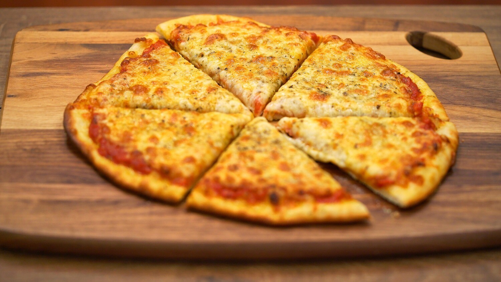
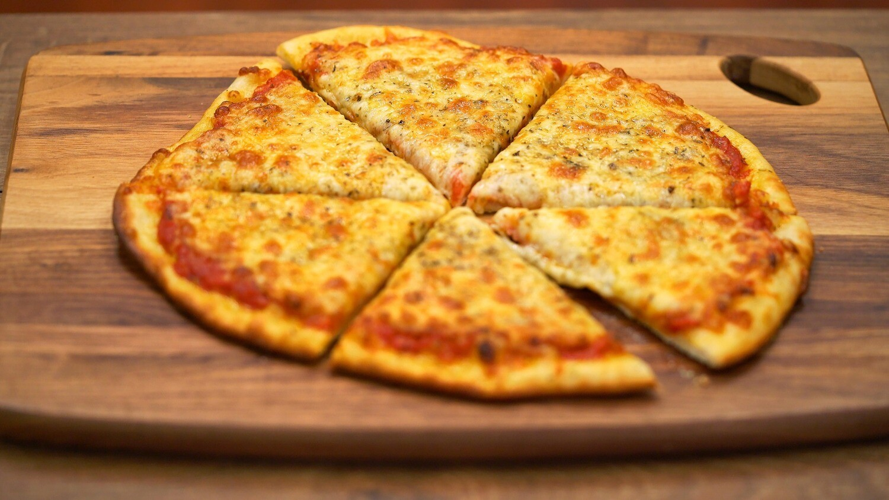

Pizza
Pizza is my favourite dish since im a kid. In Italy there are at least three big family of pizza:
- Pizza classica: this tipe of pizza is the classic one, so is thin and has also the margins (we say "cornice"
in italian) that are not so big. Usually is made with dried mozzarella.
- Pizza in teglia: is the street food pizza. Is not thin, very soft and usually made in a pan. Is very
common in Roma.
- Pizza napoletana: as the name suggest, this pizza has been created in Napoli. Is my favourtie one!
The pizza is very thin at the center with very high "cornicione", super soft and usually made with fresh mozzarella.
 
